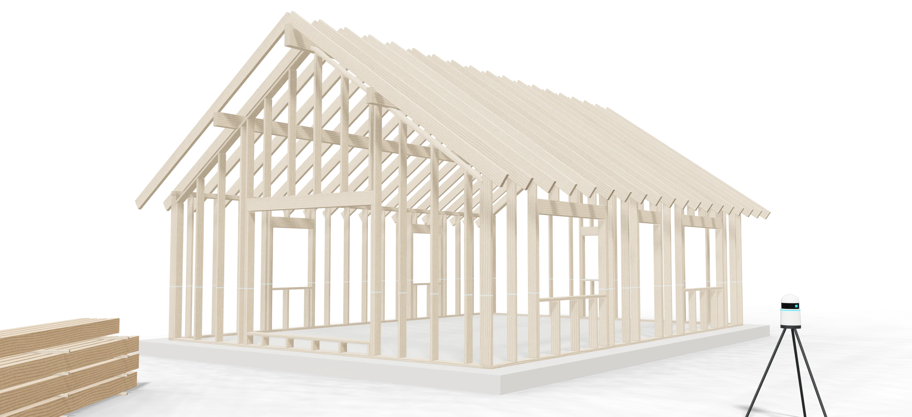
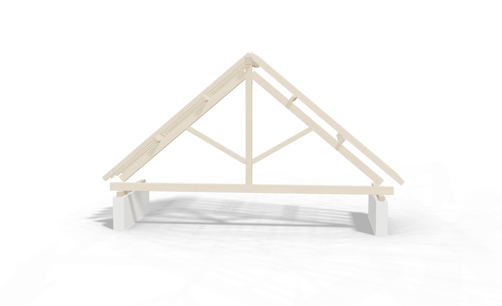
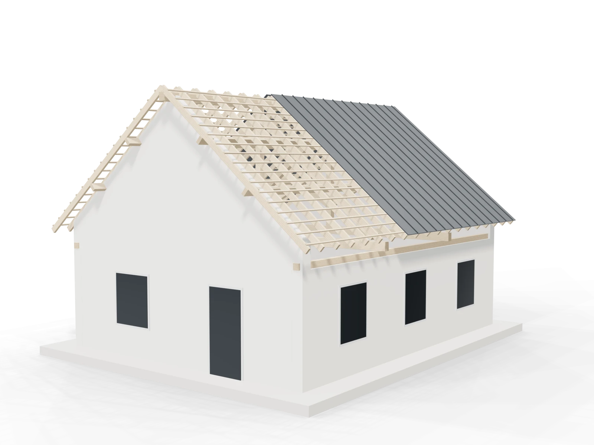
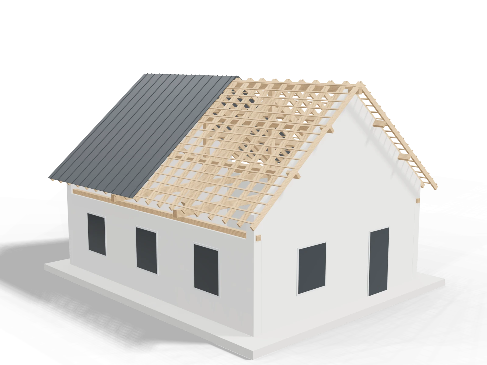
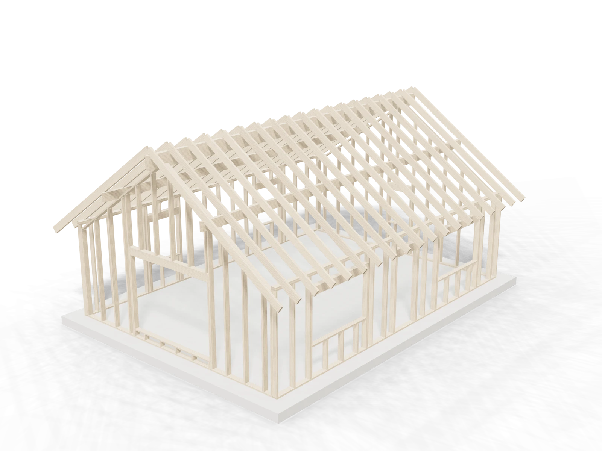
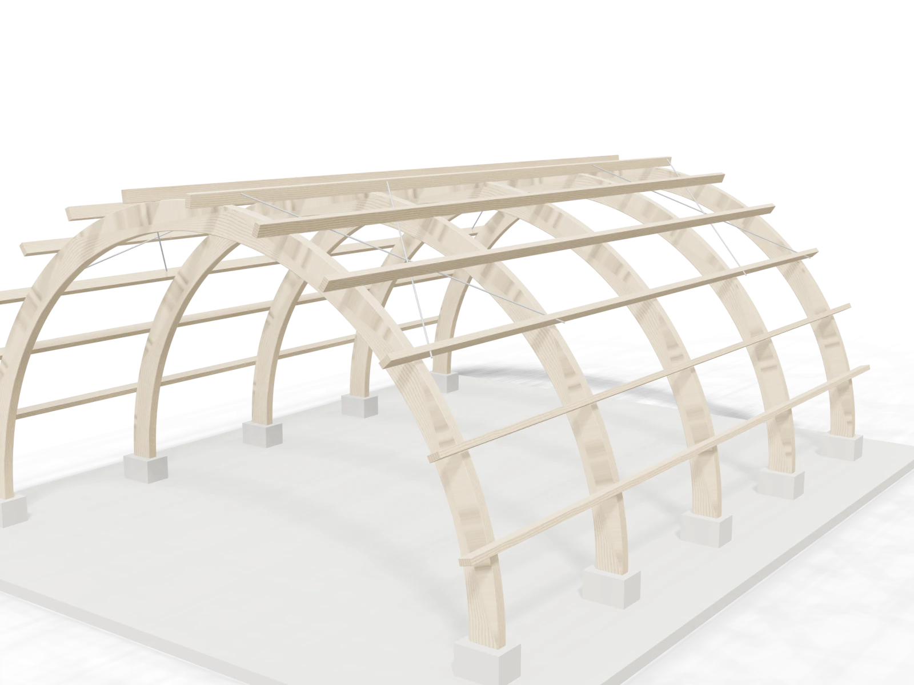
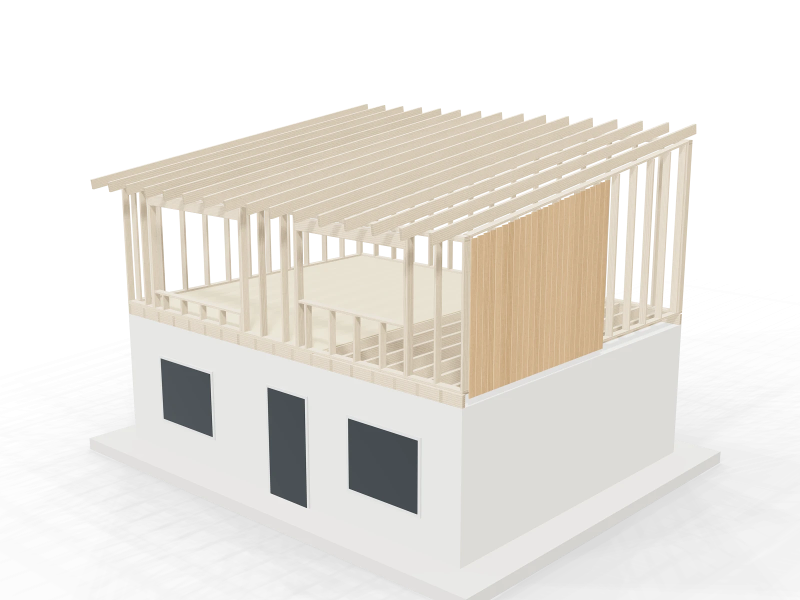
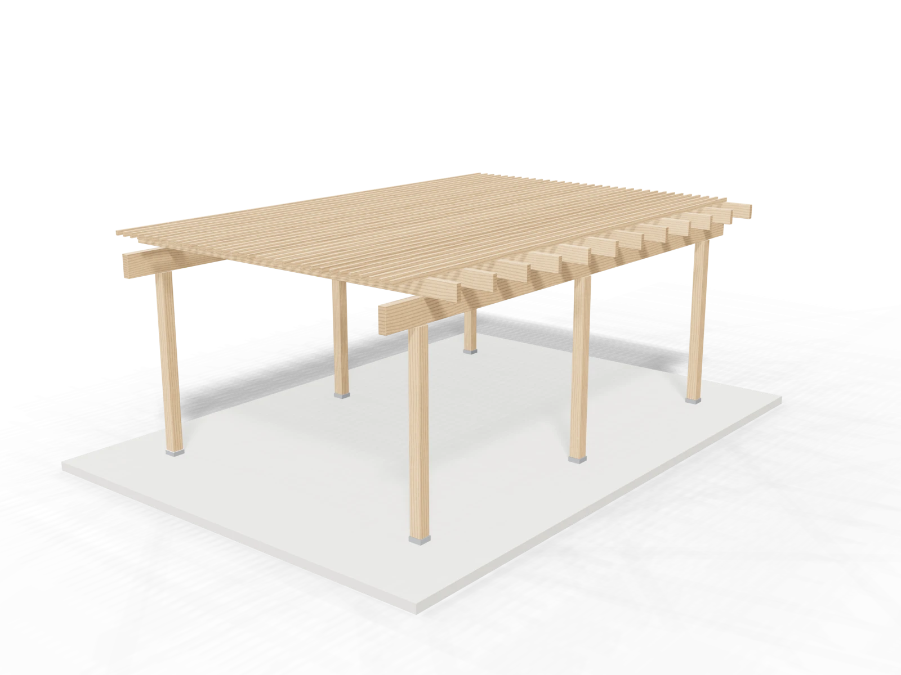
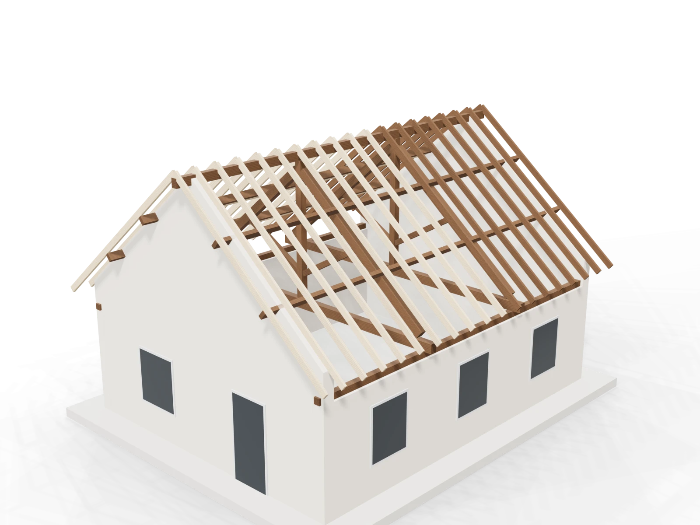

01 / 04
Charpente traditionnelle
Fermes, pannes et chevrons assemblés à tenons et mortaises, chevillés bois. Le geste des compagnons, la précision du numérique.

Conception · Taille · Levage
Charpente traditionnelle, ossature bois et lamellé-collé. Nous dessinons chaque pièce en 3D, nous la taillons à l'atelier et nous la levons sur votre chantier — une seule équipe, du premier relevé à la dernière cheville.
Découvrir la méthodeUne structure bois se pense comme un ouvrage d'art.
01 / 04
Fermes, pannes et chevrons assemblés à tenons et mortaises, chevillés bois. Le geste des compagnons, la précision du numérique.
02 / 04
Murs à montants de 145 mm, isolation entre montants, pare-pluie et bardage. Une maison sèche, légère et performante, levée en quelques jours.
03 / 04
Grandes portées, poutres courbes, halles et préaux : le bois reconstitué ouvre des volumes qu'aucune poutre massive ne permet.
04 / 04
Diagnostic, traitement, moisage et remplacement des pièces fatiguées. Nous conservons ce qui peut l'être, nous renforçons le reste.
10ans
Garantie décennale
3D
Maquette validée avant taille
C24· GL24h
Bois classés structure
Trois manières de porter un toit.
Survolez une pièce pour l'isoler, faites pivoter la ferme d'un glisser, passez en vue éclatée. Chaque assemblage est calculé avant d'être taillé.

Portée 8,00 m · Pente 40° · Entrait 18 × 24 cm · Chêne · Douglas
La ferme traditionnelle par excellence. Assemblée à tenons, mortaises et chevilles, elle franchit de grandes portées sans appui intermédiaire et reste apparente sous les combles.
Nous scannons l'existant au laser : murs, aplombs, niveaux. Le nuage de points devient la base de toute l'étude.
Chaque pièce est dessinée, chaque assemblage vérifié. Vous visitez votre charpente en 3D avant le premier trait de scie.
Les bois sont taillés sur machine à commande numérique puis ajustés à la main. Tout est numéroté, rien n'est improvisé sur le chantier.
Sablières, fermes, pannes, chevrons : la structure monte dans l'ordre, à la grue, en quelques jours.
Liteaux, écran sous-toiture et couverture : la maison est hors d'eau. Nous restons jusqu'à la réception.

Ce que nous construisons.






Visite, relevé et chiffrage.
Décrivez votre projet en quelques lignes : nous vous rappelons pour fixer une visite et un relevé.